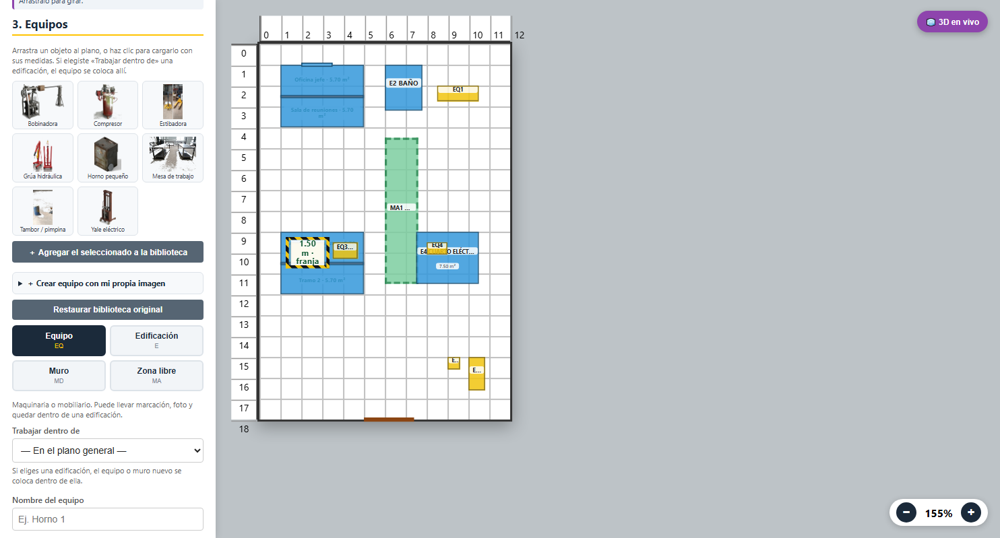
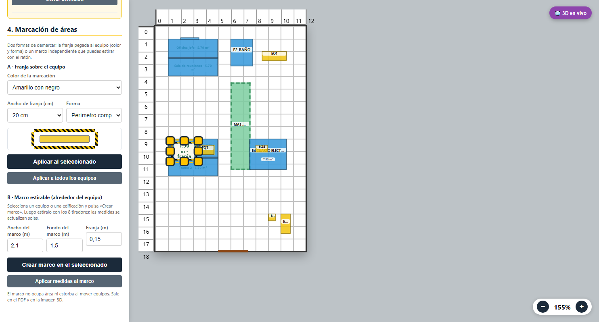
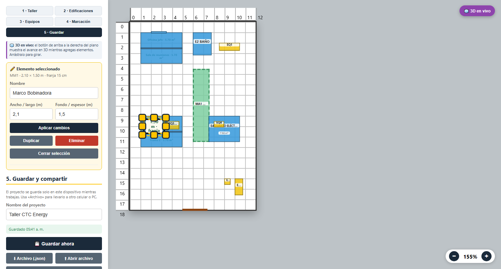

CTC ENERGY
Simulador de Planta
Guía rápida para dibujar el taller por etapas, guardar el trabajo,
compartirlo en 3D por WhatsApp e imprimir el plano en PDF.
Versión 1.4.1 Octubre de 2026 · 5 etapas · 3D en vivo · 44 pruebas automáticas
Antes de empezar
¿Dónde abro la app?
En el navegador del celular o del PC: jeydiaza-ui.github.io/simulador-planta.
También puedes abrir el archivo index.html con doble clic.
Instalarla como app (recomendado en el celular)
- Android / Chrome: menú ⋮ → Instalar aplicación.
- iPhone / Safari: botón Compartir → Agregar a pantalla de inicio.
Después de la primera carga funciona sin internet.
¿Cómo se guarda?
La app guarda sola en el dispositivo mientras trabajas. En la etapa
5 · Guardar ves la hora del último guardado. Para pasar el proyecto a otro
equipo usa ⬇ Archivo (.json) y luego ⬆ Abrir archivo.
Consejo: si vas a hacer cambios grandes, descarga primero el archivo
.json como respaldo. Incluye las fotos de los equipos.
Controles básicos
| Acción | Cómo |
|---|
| Mover un elemento | Mantén pulsado y arrastra (ratón o dedo). |
| Seleccionar / editar | Toca el elemento: arriba del panel aparece su ficha. |
| Girar 90° | Botón ↻ del elemento. |
| Borrar | Botón × del elemento o Eliminar en la ficha. |
| Deshacer | Ctrl + Z o el botón ↩️. |
| Hacer zoom | Botones − / + abajo a la derecha. |
| Ver el avance en 3D | Botón 🧊 3D en vivo (arriba a la derecha del plano). Arrastra el panel para girar. |
Etapa 3 · Equipos
- Arrastra un objeto de la biblioteca al plano, o haz clic para cargarlo con sus medidas.
- Para crear tu propio equipo: abre ＋ Crear equipo con mi propia imagen, escribe nombre,
ancho, fondo y alto, y elige una foto o render. Queda guardado en tu biblioteca.
- Si elegiste una edificación en Trabajar dentro de, el equipo se coloca dentro de ella.
- Puedes ajustar medidas, color, stand, estante y foto en la ficha del elemento.
- El panel 3D en vivo se actualiza solo con cada equipo que agregas; con ⤢
lo ves en pantalla completa y con 📤 lo compartes.

Etapa 4 · Marcación
Hay dos formas:
- A · Franja sobre el equipo: elige color, ancho (10 a 30 cm) y forma
(perímetro, U, L, frente o lados) y pulsa Aplicar.
- B · Marco estirable: selecciona un equipo o edificación y pulsa
Crear marco. Arrastra los 8 tiradores para estirarlo: las medidas se
actualizan solas. También puedes escribir ancho, fondo y franja y pulsar
Aplicar medidas al marco.

El marco no ocupa área ni estorba al mover equipos; sale en el PDF y en la imagen 3D.
Etapa 5 · Guardar, compartir e imprimir

Guardar
- Guardar ahora: guarda en el dispositivo.
- Archivo (.json): descarga el proyecto con fotos.
- Abrir archivo: carga un proyecto guardado.
- Enviar proyecto: compártelo por WhatsApp.
Compartir el 3D
- Ver en 3D: gira con el dedo y acerca con la rueda/pellizco.
- Compartir 3D: crea un PNG y abre WhatsApp.
- PNG 3D: solo descarga la imagen.
Imprimir el plano en PDF
- Pulsa 🖨️ Imprimir / PDF 2D.
- En el diálogo elige la impresora Guardar como PDF.
- El PDF sale con el plano a escala y las tablas: convenciones, áreas, muros,
marcos, objetos, edificaciones, recintos, puertas/ventanas y total ocupado.
Si el plano sale muy pequeño, revisa que el papel sea A4 vertical
y los márgenes predeterminados. La app calcula la escala para que quepa.
Atajos útiles
| Tecla | Acción |
|---|
| Ctrl + Z | Deshacer |
| Ctrl + S | Guardar ahora |
| Esc | Cerrar 3D, cancelar colocación o cerrar la guía |
Preguntas frecuentes
¿Se pierde el trabajo si cierro el navegador?
No: se guarda solo en el dispositivo. Si borras los datos del navegador, se pierde;
por eso conviene descargar el archivo .json de vez en cuando.
¿Cómo paso el proyecto del celular al PC?
En el celular: Archivo (.json) o Enviar proyecto y mándalo por WhatsApp/correo.
En el PC: Abrir archivo.
No cabe un equipo dentro de una edificación
Agranda la edificación o quita elementos. La app avisa «No cabe dentro de…» y no
coloca nada a medias.
Quiero mover un elemento encima de otro
Activa Mover libre en la etapa 5. Por defecto la app evita solapes.
El botón Compartir no abre WhatsApp
En PC algunos navegadores no tienen hoja de compartir: la app descarga el PNG y abre
WhatsApp Web. Adjunta la imagen descargada.
¿Puedo seguir usando la versión anterior?
Sí: el archivo .json antiguo se puede abrir; la app adapta los datos.
Créditos
Simulador de Planta CTC Energy · v1.4 · Hecho para el taller de CTC Energy.
Funciona sin conexión y no envía datos a ningún servidor.